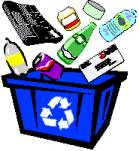

Problem D
Recycling
Input: Standard
Input
Output: Standard
Output
|
Recycling involves processing used materials into new products in order to prevent the waste of potentially useful materials. Recycling materials include things like glass, paper, plastic, metal and textiles. There are some materials that can’t be recycled such as Aerosol Cans. Aerosol cans that are not empty may leak or explode during the sorting and baling processes of recycling.
|
 |
You are given a list of materials to be recycled. The materials are initially aligned in a line one after another. For every type of recyclable-material there is a corresponding bin. You are required to place each recyclable-material in its corresponding bin.
Example:
paper – glass – paper – aerosol – paper
In the example above, there are two types of recyclable-materials (paper & glass) and one type of non-recyclable-material. If we were to pick each material one by one and throw them in the bins, we would require 4 moves since there are 4 recyclable-materials. However, if we remove consecutive items in one move, provided they are of the same type, we could achieve the desired task in lesser number of moves.
Let’s see how this can be done: If we remove the glass first then the first two papers appear side by side enabling them to be moved together in the next move. Then we just have one paper remaining at the end and that requires a further move. This accumulates to a figure of 3 moves.
Illustration:
# Start :
paper – glass – paper – aerosol – paper
# Move 1 :
paper – paper – aerosol – paper [ after removing
glass ]
# Move 2 :
aerosol – paper [ after removing first 2 papers ]
# Move 3 :
aerosol [ after removing the last
paper ]
The first line of input is an integer T(T<50)
that indicates the number of test cases. Each case starts with an integer N(N<100).
The next line contains the names of N
materials. The name of each material is a string containing only characters
from the set [a..z] and [A..Z] and the length of each is at most 20. A
recyclable-material is represented by lowercase letters only and that of
non-recyclable-material by uppercase letters only.
For each case, output the case number
followed by the minimum number of moves required to clean up all the
recyclable-materials meeting the constraints mentioned above.
|
3 paper glass paper AEROSOL paper 4 icpc icpc icpc icpc 3 NO RECYCLABLE MATERIALS |
Case 1: 3 Case 2: 1 Case 3: 0 |
Problem Setter : Sohel
Hafiz
Special Thanks : Md. Arifuzzaman Arif